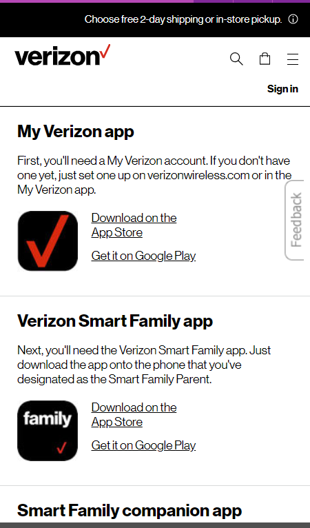
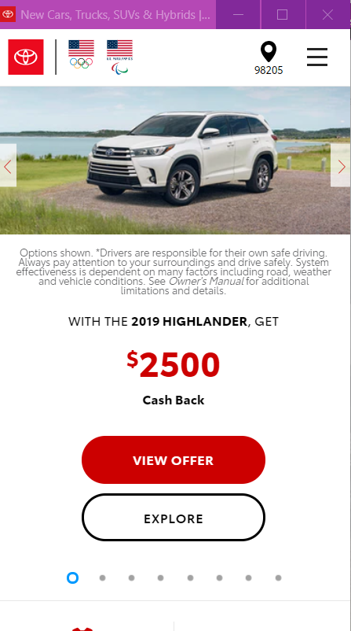
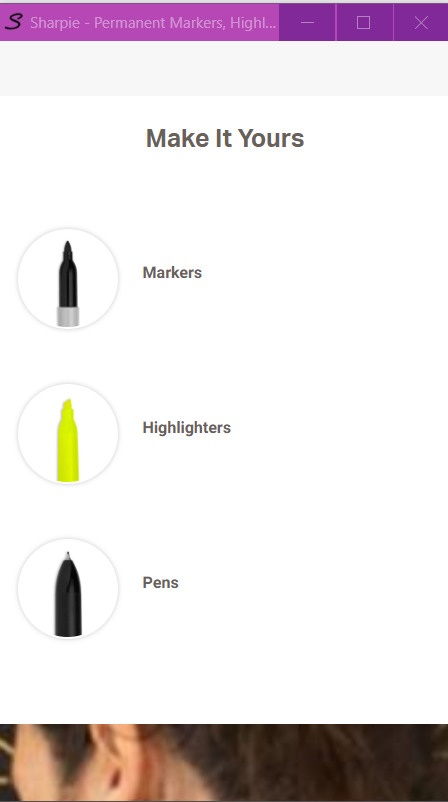

Design Principles
Contrast
Verizon

Contrast is the use of color, typography, font sizes and images to make a website more readable. Verizon consistently delivers amazing contrast with their simple white background with black text and very simple highlight objects in red.
Rule of Thirds
Toyota

The rule of thirds seperates an image into 9 sections by imagining 2 horizontal and 2 vertical lines equally spaced. Placing an image mostly in one of these spots or on an intesection of the lines draws the eye to that image more easily. Toyota uses this principle by placing the vehicle in the picture off to the right and at an angle, taking up the most space centered and to the top right.
Whitespace and Clean Design
Sharpie

White Space is the part of the webpage that doesn't have text in it. White space can be a picture, or just background. White space gives a very clean, uncluttered feel that makes the important elements stand out. Sharpie uses this principle very well on their website by having a clean white background with an icon and a link to direct the user.